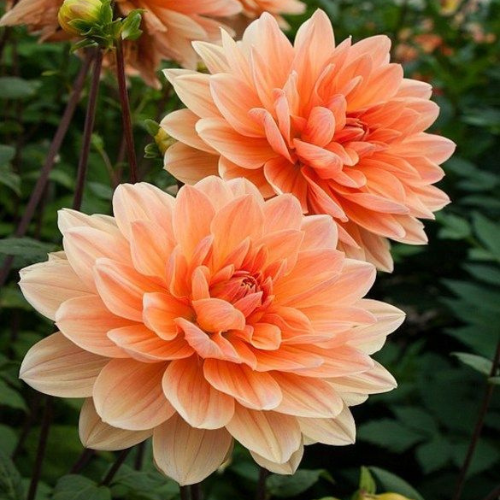

Lobo Mexicano
Los lobos grises mexicanos son los más pequeños de todas las subespecies de lobos grises en América del Norte. HÁBITAT: Los lobos grises mexicanos se encuentran en una variedad de hábitats, incluyendo bosques de las montañas y los desiertos de Chihuahua y Sonora.

Vaquita marina
La vaquita marina o cochito es una especie de cetáceo odontoceto de la familia Phocoenidae, una de las siete especies de marsopa. Mide 150 cm de largo y pesa hasta 50 kg. También es considerada una especie endémica de México en Baja California

Liebre de Tehuantepec
es una especie endémica de México que se caracteriza por tener el dorso oscuro, el vientre y los costados blancos, con líneas en las bases de las orejas y en medio de éstas . Su área de distribución abarcaba del sur del Istmo de Tehuantepec hasta Tonalá, Chiapas

Teporingo
El mamífero de orejas y patas cortas es uno de los conejos más pequeños del mundo y obtiene su nombre de su singular hábitat: vive en las laderas de solo cuatro volcanes extintos en México central, cada uno a, aproximadamente, 45 minutos de distancia de Ciudad de México. El teporingo está en peligro de extinción; se cree que cuenta con menos de 7000 especímenes en estado salvaje.
Xoloitzcuintle
El xoloitzcuintle, también llamado xoloitzcuintli o simplemente xolo, es una raza de perro sin pelo originaria de México; es presentado en tamaño toy, estándar y mediano. Se le conoce por su endemismo en ese país y su estrecha relación con la cultura azteca.

Tlacuache
Conoce al tlacuache es el marsupial mexicano único en su especie, aquel que le robó el fuego a los dioses y se sacrificó para hacerle bien a la humanidad. Hoy en día son animales en peligro, así que si los ves ¡Cuídalos! Porque son la primera línea de defensa en contra de plagas e insectos rastreros.

Perrito de la Pradera
El perrito de la pradera mexicano es una especie de roedor esciuromorfo de la familia Sciuridae endémica de México. Su trato como una plaga de la agricultura lo han conducido a su estado de especie en peligro de extinción. Están relacionados con las ardillas, tamias y marmotas.

Flor de Nochebuena
La flor de nochebuena, es originaria de México. Cuetlaxóchitl, es su nombre en náhuatl y significa “flor de cuero”. La Cuetlaxóchitl era una planta de ornato muy apreciada por los aztecas y ocupaba un lugar muy especial en los jardines de Nezahualcóyotl y Moctezuma.

Dalia
Dahlia es un género de plantas de la familia de las asteráceas. Es la flor nacional de México.
Arbol de Tule
es una especie arbórea perteneciente a la familia de las cupresáceas, conocida popularmente, entre otras denominaciones, como ahuehuete. Es nativa de México

Peyote
peyote o jícuri, es una especie de cactus norteamericano del género Lophophora. Es una especie endémica de México.El peyote está incluido en la Lista Roja de la UICN como una especie en estado vulnerable.
Ajolote
El axolote mexicano o ajolote, Ambystoma mexicanum, es una salamandra con la característica poco habitual de conservar sus rasgos larvales en su vida adulta.Este singular anfibio se encuentra en peligro crítico de extinción según la lista roja de la Unión Internacional por la Conservación de la Naturaleza, debido a la pérdida de hábitat,